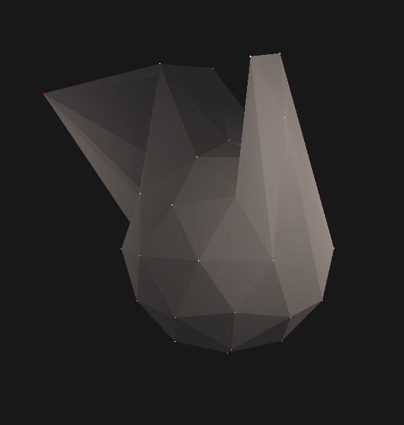

Vulkan Modeler
While studying at DAE, we had a course called Graphics Programming 2. In it, we spent an entire semester building a graphics engine capable of rendering 3D objects and lighting.
I decided to create a very simple 3D modeler. All it could do was let you select vertices by clicking on them, and then move them using keyboard inputs.
The project itself isn’t my greatest achievement, but I'm still proud of the graphics engine side of it.
